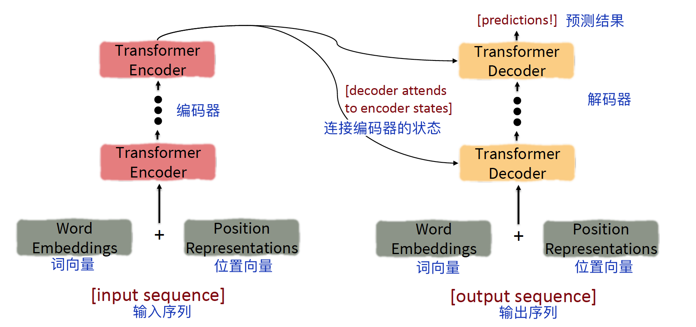
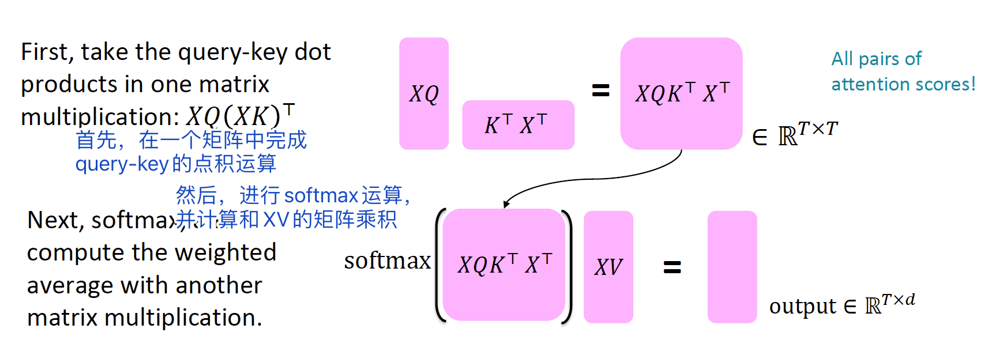
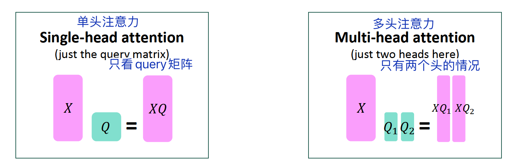
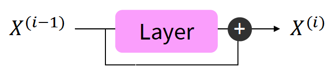
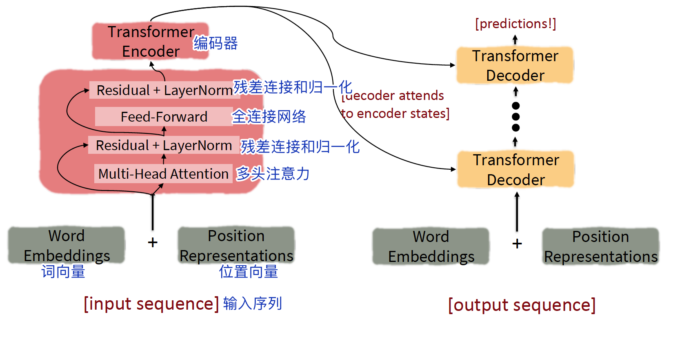
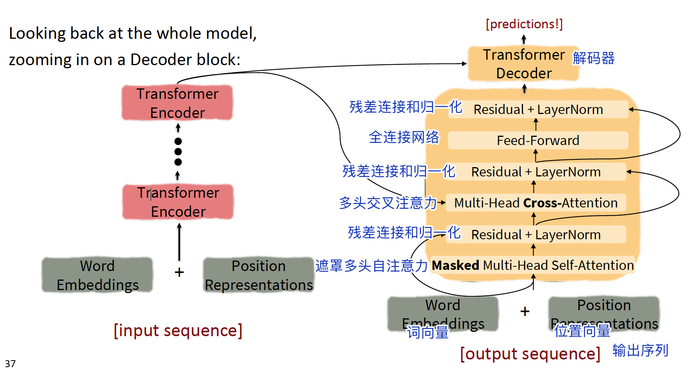

Lecture09: 自注意力模型、Transformers¶
本节主要内容¶
- 从RNN到基于注意力的NLP模型
- Transformer模型
1 从RNN到基于注意力的NLP模型¶
1.1 RNN模型存在的问题¶
- 线性相互作用距离（Linear interaction distance），即长距离依赖问题。
- 缺少并行性（parallelizability）。
为了解决上述问题，人们考虑到了注意力机制。
[学生提问]注意力和全连接网络的区别是什么？
1.注意力的权重是动态的
2.参数的计算不同
1.2 自注意力模型介绍¶
注意力机制的运作需要queris, keys, values向量：
- queries q_1, q_2,..., q_T，q_i∈R^d
- keys k_1, k_2,..., k_T，k_i∈R^d
- values v_1, v_2,..., v_T，v_i∈R^d
在自注意力模型（self-attention）中，queries，keys，values来源相同。
- 例如，如果某层的输出是x_1, x_2,..., x_T，那么可以使v_i = k_i = q_i = x_i[?]
那么，自注意力的计算（以点积为例）如下：
（1）计算query-key乘积，得到注意力分数e_{ij} $$ e_{ij} = q_i^Tk_j $$ （2）计算注意力权重α $$ α_{ij} = softmax(e_{ij}) $$ （3）计算输出 $$ output_i = \sum_j{α_{ij}v_j} $$
1.3 自注意力模块的处理¶
1.3.1 位置编码¶
因为自注意力没有考虑位置信息，所以需要将序列的位置编码到keys，queries，values向量中。
考虑将序列索引（sequence index）用向量（vector）表示： $$ p_i∈R^d, for\; i∈{1,2,...,T} $$ p_i即位置向量（positional vector）。
得到位置向量后，我们将其加到输入里。假设\widetilde q，\widetilde k，\widetilde v是之前的向量，则： $$ q_i =\widetilde q_i + p_i\ k_i =\widetilde k_i + p_i\ v_i =\widetilde v_i + p_i\ $$
[?]位置向量不是加到输入里吗？为什么这里是加入到q,k,v？
位置向量有多种计算方式，如正弦位置表示等，最常用的是绝对位置表示（absolute position representations）。（注：有点像独热编码）
1.3.2 遮罩¶
进行序列预测的时候，不能看到后面的信息，因此采用了遮罩（Masking）处理，即将后面单词的注意力分数设置为-\infty：
2 Transformer模型介绍¶
2.1 Transformer概览¶

2.2 Transformer编码器¶
编码器（Encoder）包含以下模块：
-
Q-K-V向量
-
多头注意力机制（Multi-head attention）
其他训练技巧（这些技巧不能提升模型能做什么，而是加速训练过程）
- 残差连接（Residual connections）
- 归一化（Layer normalization）
- 缩放点积运算（Scaled Dot Product）
2.2.1 Query-Key-Value向量矩阵¶
用x_1,...,x_T (x_i∈R^d)表示Transformer编码器的输入向量，则queries, keys, values的计算如下：
- q_i=Qx_i，Q∈R^{d×d}是权重矩阵
- k_i=Kx_i，K∈R^{d×d}是权重矩阵
- v_i=Vx_i，V∈R^{d×d}是权重矩阵
对不同的参数矩阵对原始输入向量做线性变换，从而让不同的变换结果承担不同角色。
让我们通过矩阵的视角来看Q，K，V是如何计算的：
首先，用X=[x_1;...;x_T]∈R^{T×d}表示输入向量的拼接矩阵，那么XQ∈R^{T×d}，XK∈R^{T×d}，XV∈R^{T×d}。输出就可以表示为： $$ output = softmax(XQ(XK)^T)×XV $$ 
2.2.2 多头注意力机制¶
对于单词i，自注意力只注意到x^T_iQ^TKx_j高的地方，但是我们如何关注到不同的j呢？
这里对为什么要使用多头的解释并不清楚，可以参考：为什么Transformer 需要进行 Multi-head Attention？ - 知乎 https://www.zhihu.com/question/341222779
《自然语言处理——基于预训练模型的方法》P93中的解释是：
“由于自注意力结果需要经过归一化，导致即使一个输入和多个其他的输入相关，也无法同时为这些输入赋予较大的注意力值，即自注意力结果之间是互斥的，无法同时关注多个输入。因此，如果能使用多组注意力模型产生多组不同的注意力结果，则不同组注意力模型可能关注到不同的输入上，从而增强模型的表达能力。“
我们通过多个Q, K, V矩阵定义多头注意力（Multi-headed Attention）。
用Q_ℓ,K_ℓ,V_ℓ∈R^{d×d/h} 表示不同的参数矩阵，其中h表示注意力头的序号，ℓ的取值范围是从1到h。(R^{d×d/h})
每个注意力头独立运算： $$ output_ℓ = softmax(XQ_ℓKT_ℓXT)*XV_ℓ $$ 其中output_ℓ∈R^{d/h}。
然后，将所有的输出混合： $$ output = Y[output_1;...;output_h], Y∈R^{d×d} $$ 下图是单头注意力和多头注意力的简单示意图：

可以看出，多头注意力和单个注意力的计算量是一样的。（都是把矩阵拼起来计算一次）
2.2.3 残差连接¶
残差连接（Residual connections）是一种提升模型训练效果的技巧。
正常情况：X^{(i)} = Layer(X^{(i-1)})

残差连接：X^{(i)} = X^{(i-1)}+Layer(X^{(i-1)})

2.2.4 归一化¶
归一化（Layer normalization）是一种提升模型训练速度的技巧。 $$ output = \frac{x-μ}{\sqrt{𝜎}+𝜖}*𝛾+𝛽 $$ 其中，𝜇是均值，𝜎是标准差。𝛾和𝛽是gain和bias参数[?]。
2.2.5 缩放点积运算¶
缩放点积运算是为了防止在维数过大时，梯度变小或消失。
正常情况：
缩放点积运算：
可以看出，就是将注意力分数除以维数d除以注意力头的数量h的根。
2.2.6 小结¶
2.1中给出了Tranformer编码器的整体概览，经过对模块组成的分解，编码器更具体的结构如下图所示：

2.3 Transformer解码器¶
解码器的结构与编码器类似，如图：

可以看出，稍微不一样的地方在于交叉注意力（Cross attention）。
交叉注意力机制
假设h_1,...,h_T是Transformer编码器的输出向量，z_1,...,z_T是Transformer解码器的输入向量，那么，
- keys和values来自编码器：k_i = Kh_i,v_i = Vh_i
- queries来自解码器：q_i=Qz_i.
假设H = [h_1;...;h_T]是编码器向量的拼接，Z = [z_1;...;z_T]是解码器向量的拼接，那么输出可以定义为：
$$
output = softmax(ZQ(HK)^T)×HV
$$